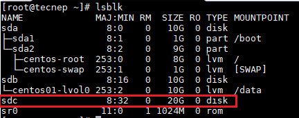

LVM
LVM (Logical Volume Management) is a tool for logical volume management which includes allocating disks and resizing logical volumes. Logical Volume Manager allows for a layer of abstraction between your operating system and the disks/partitions it uses. It has its own architecture. They start with physical volumes (PVs), which can be either hard disks, hard disk partitions, or Logical Unit Numbers (LUNs) of an external storage device. The group of physical volumes are combined to a set called volume group, with the exception of the /boot partition. The /boot partition cannot be on a logical volume group because the boot loader cannot read it. The volume groups can be divided into logical volumes, which are assigned mount points, such as /home and / and file system types, such as ext2 or ext3.
Add /data with 10Gb of disk
We have a linux system. Now we need a new mount point /data with 10GiB of storage. To get this we need to create a PV, VG and LV. Mount LV with /data path. Let’s see these step one by one.
First of all physically add the hard disk. The new disk appear (sdb) as follows.
lsblk
Here in our example we are going to add entire disk which is of 10GiB. Let’s create physical volume (PV) as below,
pvcreate /dev/sdb
Now, create volume group named ‘centos01’ for the newly create physical volume /dev/sdb
vgcreate centos01 /dev/sdb
Make logical volume with the VG just created. We are going to create one lV which will use all the space of centos01 VG.
lvcreate -l 100%FREE centos01
Verify using the command lvs. New logical volume ‘lvol0’ is created.
Make the file system using the command mkfs. You can choose filesystem type as your wish.
mkfs -t ext4 /dev/mapper/centos01-lvol0
Make directory /data to mount the volume.
mkdir /data
For persistent mounting add following line at the end of /etc/fstab
/dev/mapper/centos01-lvol0 /data ext4 defaults 0 0
Remount the system, no error should be displayed
mount -a
At last verify using the command lsblk. You can see 10 GiB is allociated to data. Use it to create, store data or anything you like.
Following command are used to see/verify the physical volume, volume group, logical volume and in detail
# Physical volume (PV)
pvdispaly
pvs
# Volume Group (VG)
vgdisplay
vgs
# Logical Volume (LV)
lvdisplay
lvs
Increase size of / and /data
We have 20GiB of hard disk(sdc). We are going to add 10GiB of disk to / and 10GiB to /data. Following is the current status of the system.

Let’s make two partition of disk.
fdisk /dev/sdc
Enter n for new partition.
Choose p for primary partition.
Enter +10G .
Type w for writing the changes. This will make /dev/sdc1 partition.
Repeat the process for creating /dev/sdc2
Inform operating system kernel of partition table changes, by requesting that the operating system re-read the partition table.
partprobe
Make physical volume
pvcreate /dev/sdc1
pvcreate /dev/sdc2
Since / is associated with centos volume group and /data is associated with centos01. We’ll expand accordingly.
vgextend centos /dev/sdc1
vgextend centos01 /dev/sdc2
Extend logical volume centos, and another lV centos1
lvextend -l +100%FREE /dev/centos/root
lvextend -l +100%FREE /dev/centos01/lvol0
Grow the file system. Since / is xfs use xfs_growfs. /data is ext4 use resize2fs commands.
xfs_growfs /dev/mapper/centos-root
resize2fs /dev/mapper/centos01-lvol0
Verify that the size are increased using,
df -h
Pratik Gautam pratikgautm@gmail.com